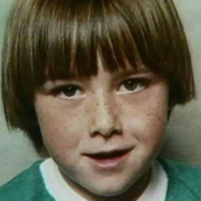

Kylie Maybury
Kylie Maybury was an Australian schoolgirl from Preston who was kidnapped and murdered on the 6th of November 1984, on the day of the Melbourne Cup. On the afternoon of 6th of November 1984, Maybury had been sent to a convenience store on Plenty Road to buy a bag of sugar, which she bought at around 5:30pm.
She was last seen going home, carrying the sugar, and looking as if she were lost. Her mother and neighbour went looking for her at around 6:00pm, when a young woman approached them saying that she’d seen a girl being driven away in a white Holden station wagon.
Maybury’s body was found in the gutter of Donald Street at about 12:45am the next morning by a fire brigade electrician, Neil Rickwood, but had not been there when police searched the street at 7:30pm.
Maybury was interred at Fawkner Crematorium and Memorial Park. Her grandfather, John Moss, was a suspect, committing suicide in 1985. Her uncle, Mark Maybury, was similarly a suspect in the case; he committed suicide in jail in 1987. He was later found to be innocent of the crime and is buried in the same cemetery as Maybury.
More than 30 years after her death, in June 2016 Victoria Police arrested and charged Gregory Keith Davies with the abduction and murder of Maybury. Davies later pleaded guilty to the murder of Maybury and in December 2017 he was sentenced to life imprisonment with a non-parole period of 28 years.